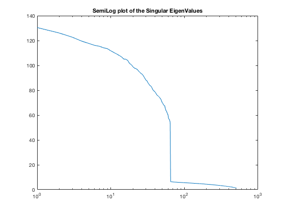
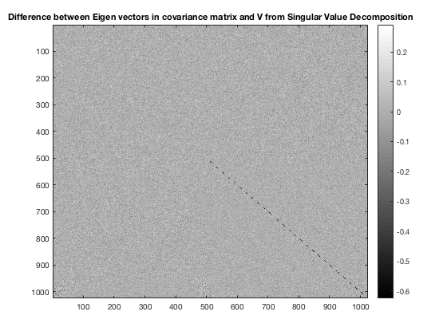

Contents
QUESTION 1
% Please download the ?rawdata.mat? data file attached in this homework (click the link to get the % file). The rawdata matrix in this data file represents 512 vectors in a 1024-dimensional vector % space. This data set is generated so that the vectors actually reside in a much-lower dimensional % subspace: More specifically, the data that lives in a low-dimensional subspace and then a certain % amount of noise are added ? so the data in rawdata is just approximately low-dimensional. % Begin by writing a function to zero-mean the data. That is, write a function that shifts the % vectors so that the mean of the data in each dimension is zero. Use it to zero-mean rawdata. % Use a different name, as you will still need the non-zero-mean version of rawdata in the future.
ANSWER 1
load 'rawdata.mat'; raw_zero = reshape(zscore(rawdata(:)),size(rawdata,1),size(rawdata,2)); %Calculates the zero mean of the raw data
QUESTION 2
% Compute the covariance matrix for both rawdata and its zero-mean version. You may use the % MATLAB function cov. Plot the matrices and their difference to demonstrate that zero-meaning % the data does not affect the covariance. (Pro tips: Use imagesc to display the matrix and it will % scale the color map appropriately. Use colormap gray to get a color map that gives a smooth % variation in color with value. Use colorbar to place a scale next to the image.)
ANSWER 2
cov_rawdata = cov(rawdata); %Covariance of the raw data cov_raw_zero = cov(raw_zero); %Covariance of the zero mean data figure(1); imagesc(cov_rawdata); %Plotting the covariance raw data colorbar; colormap 'gray'; title('COVARIANCE GRAPH OF RAW DATA MATRIX'); figure(2); imagesc(cov_raw_zero); %Plotting the covariance zero mean data colorbar; colormap 'gray'; title('(COVARIANCE GRAPH OF ZERO MEAN MATRIX'); figure(3); imagesc(cov_rawdata-cov_raw_zero); %Plotting the covariance of the Difference colorbar; colormap 'gray'; title('COVARIANCE GRAPH OF THE DIFFERENCE BETWEEN RAW DATA AND ZERO MEAN');
QUESTION 3
% Compute the principal components by finding the eigen-decomposition of your zero-mean covariance % matrix. Use the MATLAB function eig. Sort the eigenvalues from largest to smallest (and % sort the eigenvectors as well). (Pro tip: Use the [vals index] = sort(numbers, ?descend?) % version of the sort command to get a sorted list of indices that you can use to sort the eigenvectors.). % Make two plots of the eigenvalues (linear and semilog). Use this information to infer % the dimension of the low-dimensional subspace that the data approximately resides in.
ANSWER3
[E_zeromean_var_vec,E_zeromean_var_val] = eig(cov_raw_zero); %Finding out the Eigen Vlaues and Eigen Vectors E_diag = diag(E_zeromean_var_val); E_val_sorted = sort(E_diag,'descend'); %Sorting the Eigen Values in Descending Order A = size(E_zeromean_var_vec); [B A] = sort(E_zeromean_var_vec,'descend'); %Sorting the Eigen Vectors in Descending Order figure(4); plot(E_val_sorted); title('Linear plot of the EigenValues'); %Plotting the sorted Eigen Values figure(5); semilogx(E_val_sorted); title('SemiLog plot of the EigenValues'); %Plotting the sorted Eigen Vectors

QUESTION 4
% Now we ere going to compute the principal components via singular-value decomposition (SVD). % Use the MATLAB svd command to decompose the zero-mean data into U, S, and V matrices. % Make two plots of the singular values (linear and semilog). Use this information to infer the % dimension of the low-dimensional subspace that the data approximately resides in. Compare % with the answer you found earlier.
ANSWER 4
[U,E_singular,V] = svd(raw_zero); %Singular Value Decomposition of raw zero data E_singular_diag = diag(E_singular); figure(6); plot(E_singular_diag); %Plotting(LINEAR) the singular value from SVD title('Linear plot of the Singular values'); figure(7); semilogx(E_singular_diag); %Plotting(SEMILOG) the singular value from SVD title('SemiLog plot of the Singular EigenValues');
QUESTION 5
% Compare the principal components found by taking the eigenvectors of the covariance matrix % (in Subproblem 3) with the ones found in the matrix V of the SVD (in Subproblem 4). Plot the % difference of the two matrices. Comment on the differences.
ANSWER 5
figure(8); imagesc(E_zeromean_var_vec-V); %Plotting the Difference between the zero mean variance and V from SVD colorbar; colormap 'gray'; title('Difference between Eigen vectors in covariance matrix and V from Singular Value Decomposition');
QUESTION 6
% Now we are going to use the MATLAB function princomp to compute the principal components. % This time, use the non-zero-meaned data (princomp takes care of that detail for you). Plot the % score matrix returned by princomp. This matrix gives the expansion coefficients for the data in % the principal component basis. Comment on the structure you see.
ANSWER 6
[Coeff_raw_data,Score_raw_data] = princomp(rawdata); %Doing the PCA of the raw data figure(9); imagesc(Score_raw_data); %Plotting the score from tbe PCA colorbar; colormap gray; title('Score Matrix from principal components'); % Have to comment on the structure
Warning: princomp will be removed in a future release. Use pca instead.
QUESTION 7
% Following up on the lead from the subproblem above, compute the mean of the absolute value of % the elements in each column of score. Make two plots of this information (linear and semilog). % Use this information to infer the dimension of the low-dimensional subspace that the data % approximately resides in.
ANSWER 7
Score_abs = abs(Score_raw_data); Score_mean = mean(Score_abs); %Mean of the score raw data figure(10); plot(Score_mean); %Plotting(LINEAR) of the score mean title('Linear Plot of mean of Score Values'); figure(11); semilogx(Score_mean); %Plotting(SEMILOG) of the score mean title('Semilog Plot of mean of Score Values');
QUESTION 8
% Now compare the principal components found via svd and princomp. Plot the difference of the % two matrices. Now compare the difference in the expansion coefficients. In the svd version, this % will be the product US. Compute the difference of the two matrices. Comment on the results.
ANSWER 8
Signum_V = sign(V(1,:)); Signum_Coeff_raw_data = sign(Coeff_raw_data(1,:)); Signum_common = repmat(Signum_V.*Signum_Coeff_raw_data,[1024,1]); V_final = Signum_common.*V; figure(12); imagesc(V_final - Coeff_raw_data); title('Difference in Principal Components'); colorbar; colormap 'gray'; SVD_princomp = U*E_singular; PCA_princomp = Score_raw_data; Signum_SVD_princomp = sign(SVD_princomp(1,:)); Signum_PCA_princomp = sign(PCA_princomp(1,:)); Signum_common_2 = Signum_SVD_princomp.*Signum_PCA_princomp; SVD_princomp_final = Signum_common_2.*SVD_princomp; figure(13); imagesc(SVD_princomp_final - PCA_princomp); title('Difference in expansion Coeffecients'); colorbar; colormap 'gray';